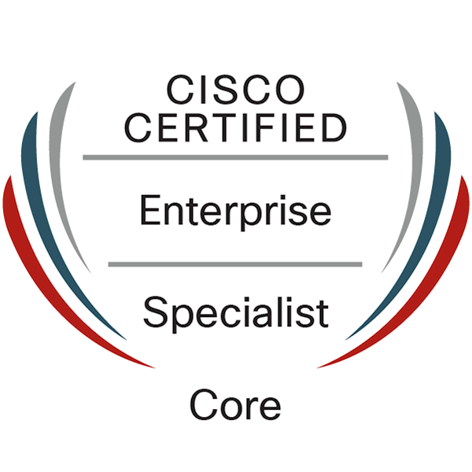
Cisco Certified Specialist - Enterprise Core
Cisco · Certified September 1, 2026
Valid through September 1, 2029
Cisco ID: CSCO14638933
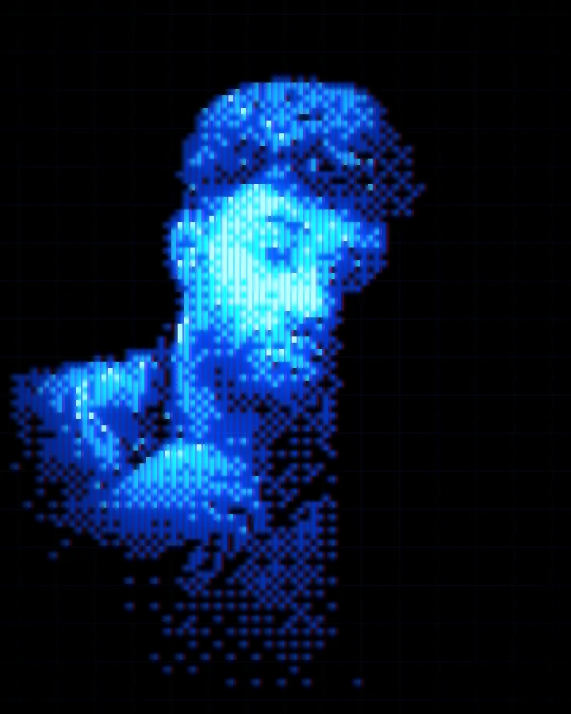
New York, NY · Open to full-time and contract roles
Network Engineering | Network Operations
I've completed 30 field engineering contracts, troubleshooting routers and switches, racking network equipment, and installing industrial cameras in Amazon warehouses. I hold two Cisco credentials: CCNA and Cisco Certified Specialist - Enterprise Core (ENCOR).
Verified credentials
Current credentials supporting network deployment, Network Operations, NOC, and infrastructure roles.

Cisco · Certified September 1, 2026
Valid through September 1, 2029
Cisco ID: CSCO14638933
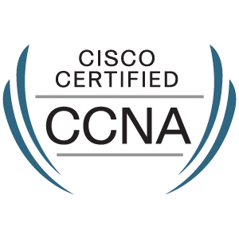
Cisco · Valid through September 2027
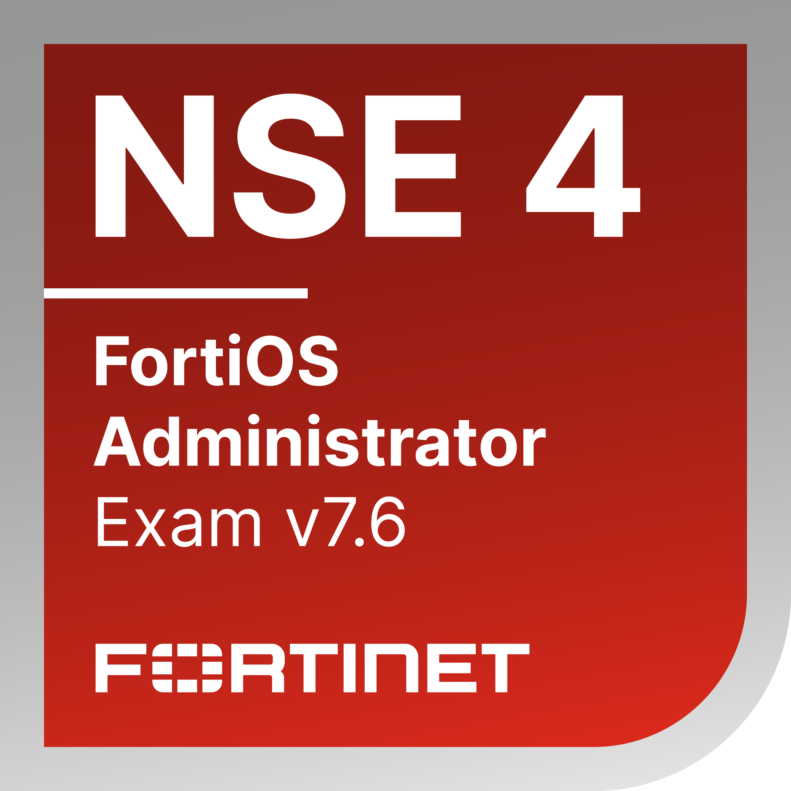
Fortinet · Achieved June 18, 2026
Valid through June 18, 2028
Validation no.: 1459723845SA
CompTIA · Valid through September 2028
Microsoft · Foundational cloud concepts and Azure services
Documented engineering work
Each report separates the objective and configuration from the evidence: what was measured, what worked, and what remains unproven.
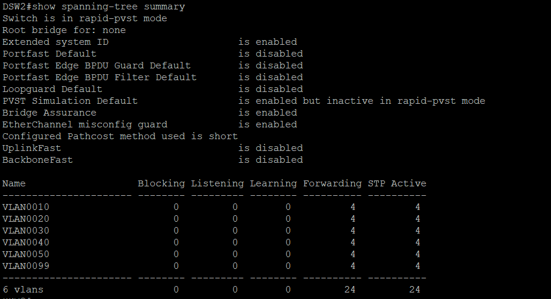
EVE-NG · Enterprise campus
VLAN segmentation, deterministic Rapid PVST+, HSRP gateways, OSPF, dual distribution routers, and dual edge paths, supported by 31 verification images.
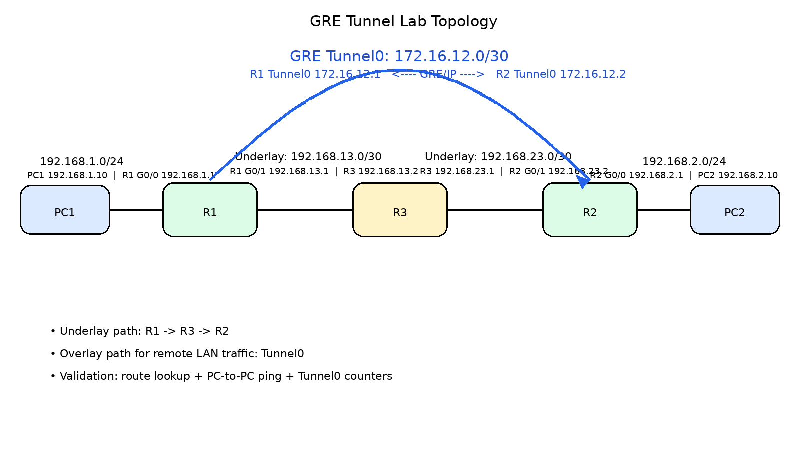
EVE-NG · Overlay networking
Routes and Tunnel0 counters prove where traffic went: R1 increased from 10 to 33 packets in each direction during bidirectional endpoint tests.
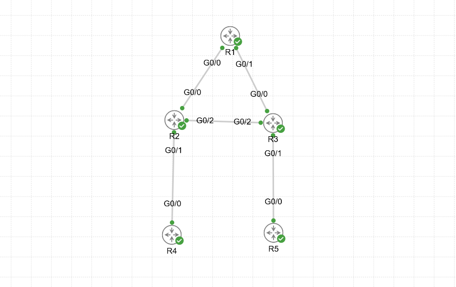
Cisco CML · Enterprise routing
Five routers across areas 0, 10, and 20, with O IA routes and an inter-area prefix learned through two equal-cost next hops.
PowerShell · Homelab observability
A read-only sampler measuring host memory pressure against an EVE-NG allocation and an explicit 2 GB planning reserve.
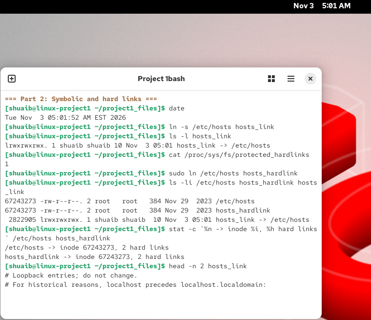
VMware · Linux administration
A focused operations report showing inode identity for hard and symbolic links, ownership changes, octal permission modes, and VM connectivity.
Python · Security evidence
Ten selected results reproduced from supplied artifacts using round-trip checks, parsing, scan-format correlation, and source hashing.
Systems teaching · 164-slide design guide
A modeled RedLink frame guide that moves from gates to addressing, including an XOR collision that accepts corrupted data.
Onsite support · Anonymized case
Ethernet routing, data-jack coordination, cable tracing, Aruba switch reinstallation, and an honest closeout that preserves remaining work.
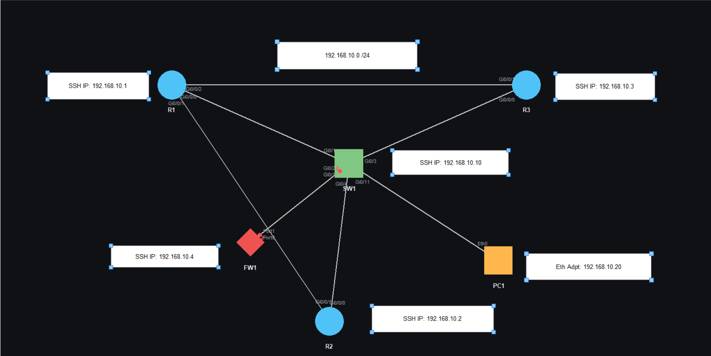
Physical lab · Packet analysis
A first-principles analysis of same-subnet communication, ARP request and reply behavior, Ethernet framing, and how routers interpret raw packet fields.
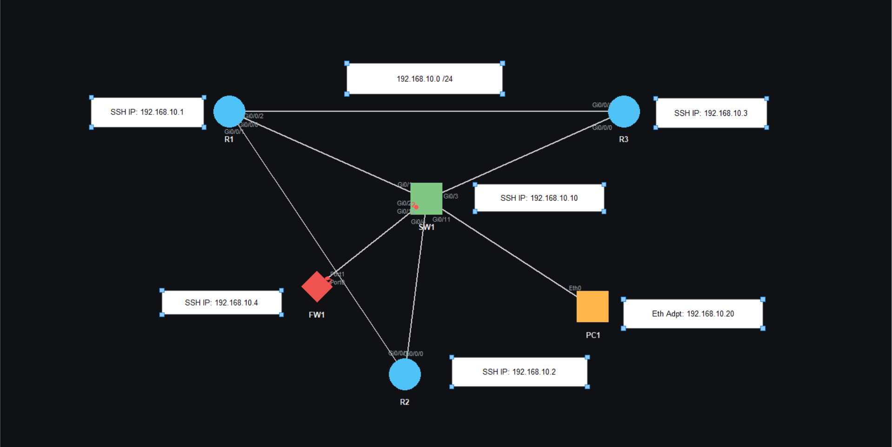
Physical lab · Secure management
Device recovery, management-IP planning, secure remote-access configuration, and troubleshooting of an IP-conflict condition that redirected SSH traffic.
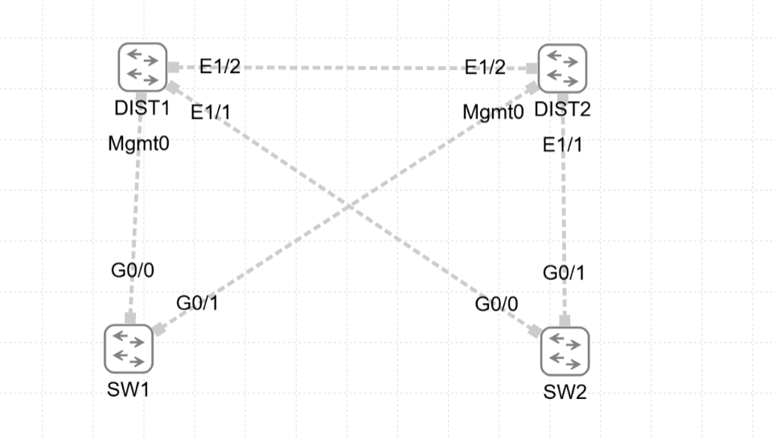
CML lab · Campus design
A four-switch campus block demonstrating root-bridge election, forwarding and alternate roles, blocked paths, and convergence after active-uplink loss.
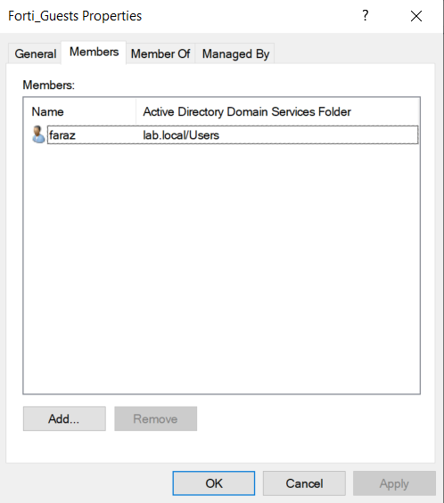
VMware lab · Identity infrastructure
A Windows 11 domain-client recovery case separating Layer 3 reachability from DNS-driven AD discovery, stale machine-account state, and token validation.
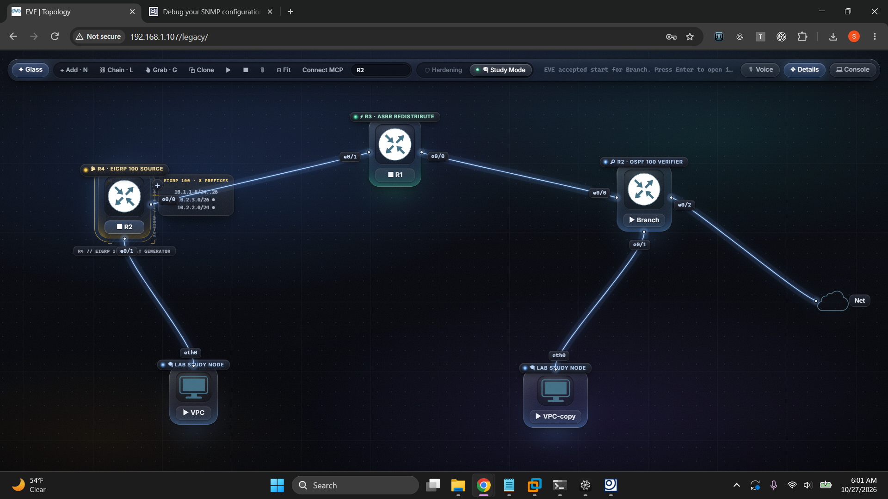
EVE-NG lab · Monitoring
A three-router EVE-NG lab enabling SNMP v2c and v3 (MD5/DES), verified with Paessler SNMP Tester: uptime polling, 32/64-bit traffic counters, and a raw ifTable walk decoded OID by OID.
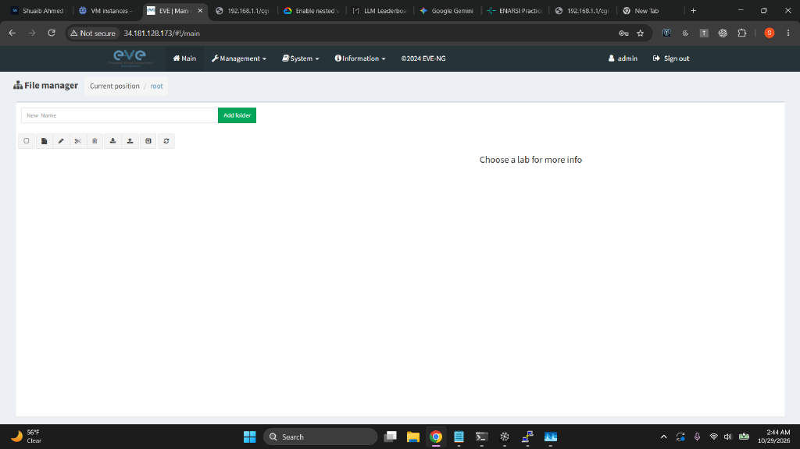
Cloud migration · Google Cloud
Rebuilding a home EVE-NG server as a 70-node cloud lab on Spot pricing: billing recovery, nested virtualization, a two-day HTTPS chase, and a self-inflicted network outage, with an honest post-mortem of where my AI assistants and I went wrong.
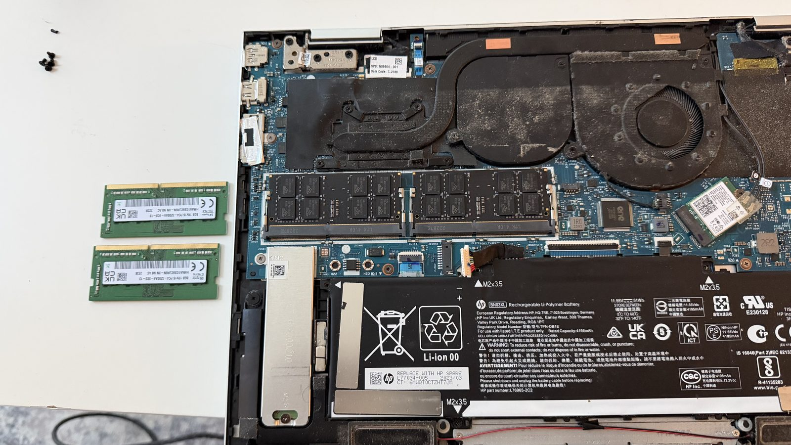
Hardware · Homelab infrastructure
Upgraded the laptop that hosts my labs from 16 GB to 32 GB, documenting battery isolation, SO-DIMM replacement, shield reassembly, and Windows verification at 3200 MT/s.
Networking + Python + automation
TopoDrawer is an extension for EVE-NG that provides a faster, more responsive interface for building and managing network topologies, reducing the lag and friction of the standard UI.
Scroll up or increase travel to move forward along your current viewing direction. Scroll down to move backward. Gentle scrolling nudges bubbles softly; faster scrolling increases impact continuously. Escape releases the page.
Enter the network. Fly through a space of glass memories.
Preparing captures…Enter network · Move the mouse to look; the center ring aims · Scroll to fly · Click to open · Esc frees the mouse, again to exit
While exploring: ← → turn · ↑ ↓ move · Shift + ↑ ↓ tilt · Home resets · Enter opens a capture. Touch: swipe sideways to look, vertically to travel.
Rims run from older blue to newer amber. Each consecutive gap stays within the limit. Dashed: month-only. Gray: undated.
Contact